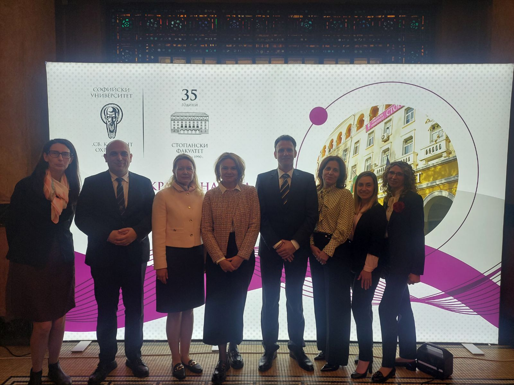
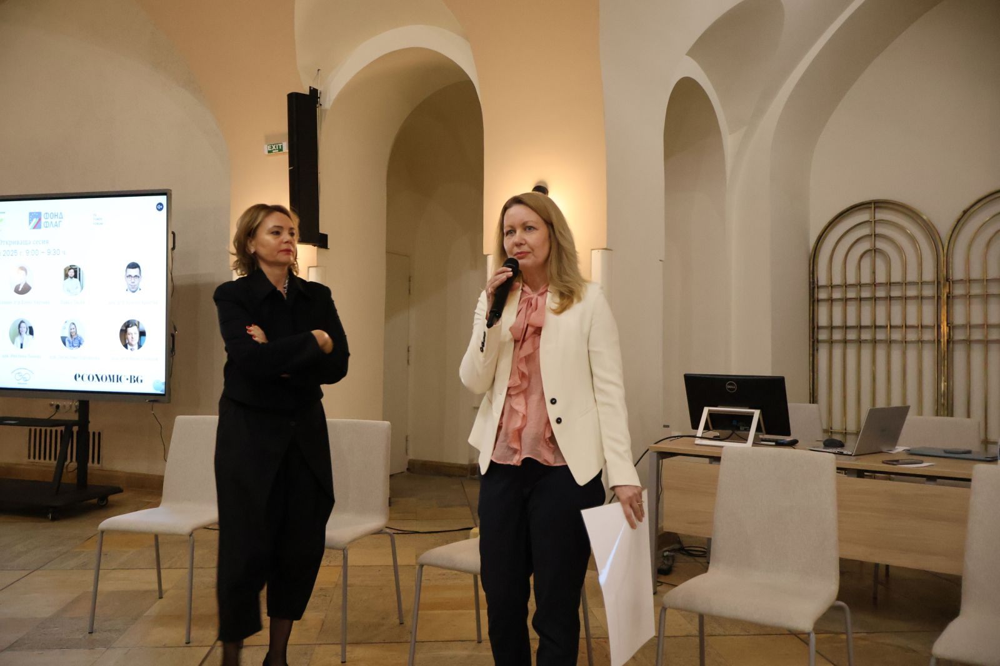
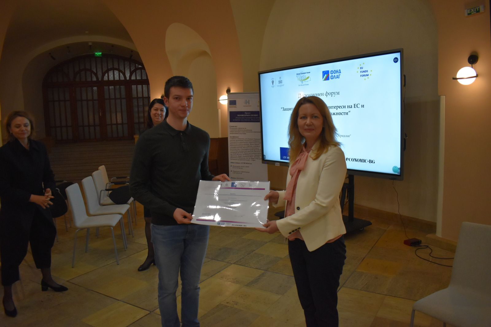
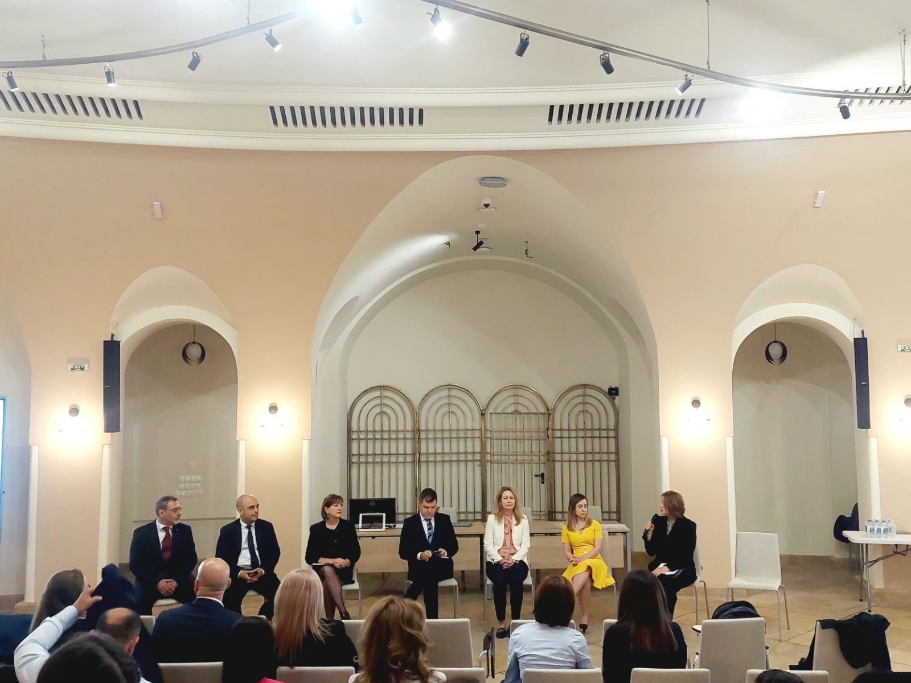
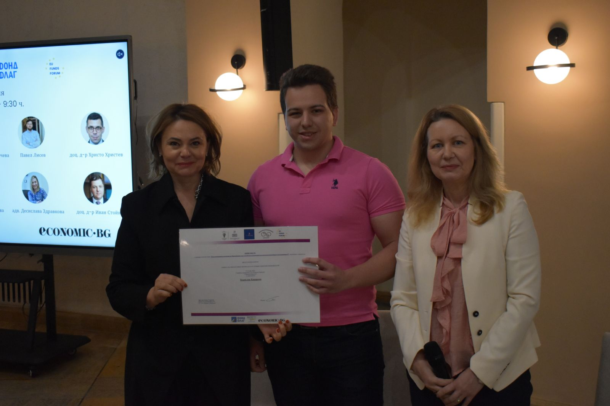
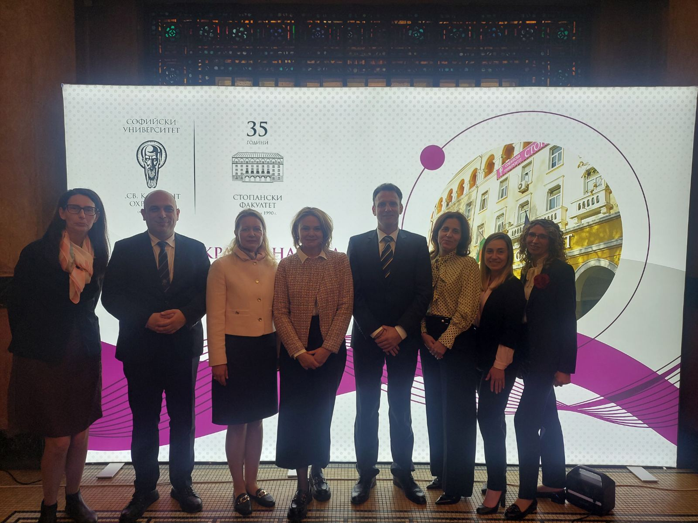
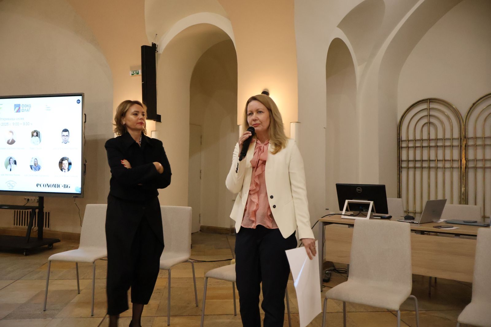
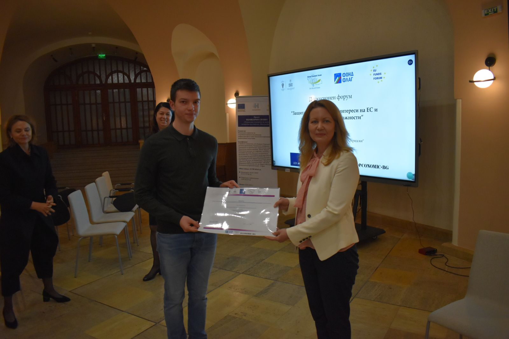
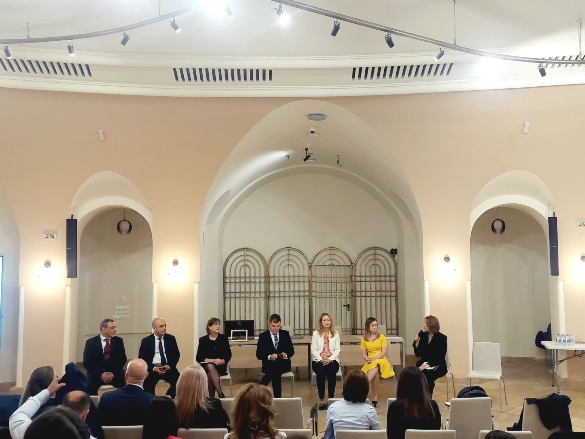
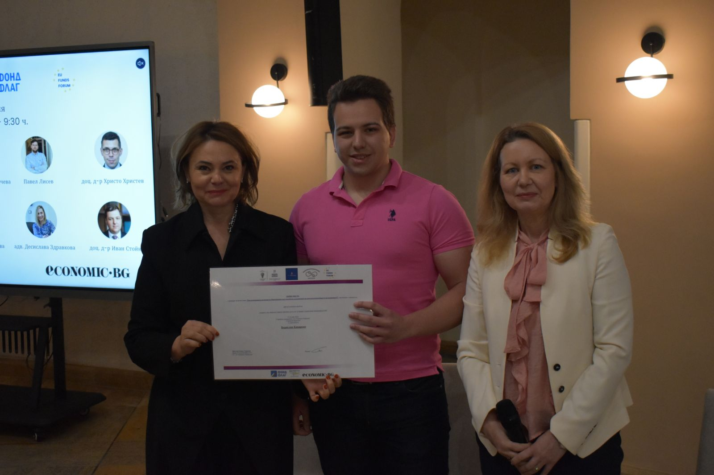

Май 2025 г.
Сдружение "Център за устойчиви политики" в партньорство със Стопанския факултет на СУ „Св. Климент Охридски“ организира форум, фокусиран върху предизвикателствата и добрите практики при управлението на европейски средства. Събитието се проведе в зала „Яйцето“ в Ректората на СУ и събра представители от академичните среди, институции, правни и финансови експерти.
Откриващата сесия бе уважена от проф. д-р Иван Шишков, доц. д-р Атанас Георгиев, посланик д-р Елена Кирчева, Надя Данкинова, доц. д-р Иван Стойнев и др. Основна тема бе необходимостта от синхронизация между европейското право и националната рамка по отношение на управлението на публични ресурси.
В рамките на форума се дискутираха ключови теми: изменения в нормативната уредба, трудности при обществените поръчки, контрол и санкции при нередности, концесии и публично-частни партньорства. Адв. Ивелина Пенева представи актуалните финансови корекции по ЗУСЕФСУ и особеностите на управлението по НПВУ.
Проведен беше и конкурс за есе на тема „Как кохезионната политика на ЕС способства за конкурентоспособността на компаниите?“, в който бяха отличени:
- Първо място – Борислав Кацарски
- Второ място – Емили Стоянова
- Трето място – Кристиян Тодоров
В обобщение, форумът изпрати ясни послания:
- Нужда от законова регулация на управлението на средствата от ЕС
- Развитие на капацитета за комбинирано финансиране и ПЧП
- Подготовка за новия програмен период след 2027 г.
Събитието се очерта като значима платформа за експертен диалог и ще продължи с ново издание през ноември 2025 г.
За повече информацияФото галерия от срещата
 








